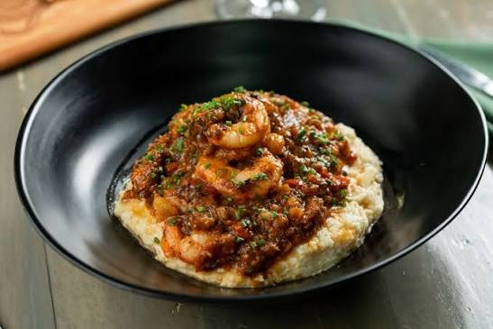
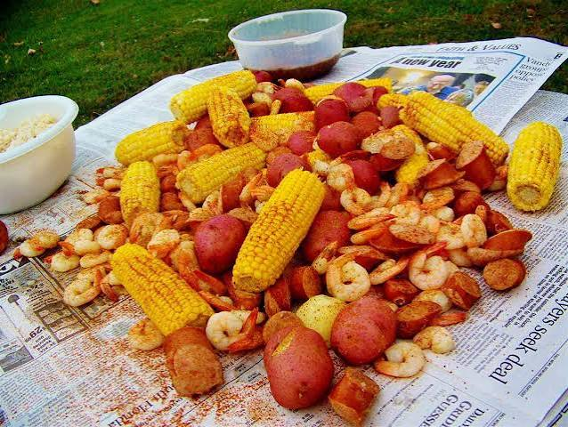
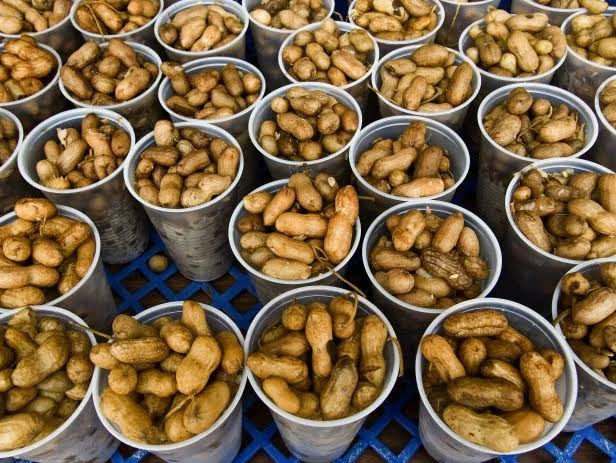

ASIANAsian Cuisine
Discover restaurants serving noodles, rice dishes, sushi, dumplings, and other Asian-inspired meals.
Look for: Location • Hours • Price range
Explore international flavors and different cuisines available around Columbia.

ASIANDiscover restaurants serving noodles, rice dishes, sushi, dumplings, and other Asian-inspired meals.
Look for: Location • Hours • Price range

LATINFind tacos, burritos, empanadas, seafood, and other Latin American favorites.
Look for: Popular dishes • Photos • Recommendations

WORLD FOODUse this guide to discover additional international restaurants and new foods around Columbia.
Look for: Cuisine • Location • Customer reviews
Compare cuisines, prices, locations, and popular dishes to find a restaurant that fits your next meal.
Recommend a Restaurant